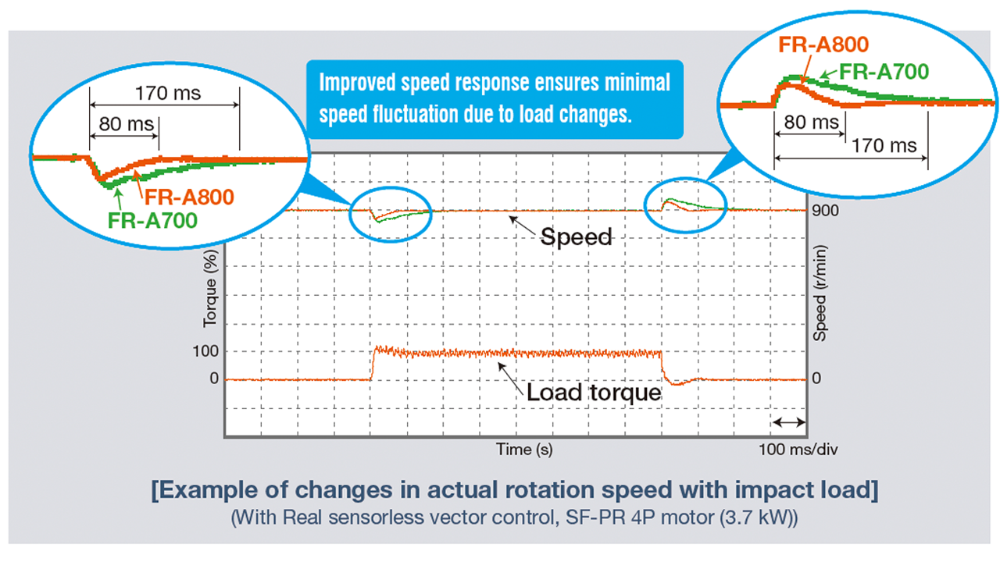
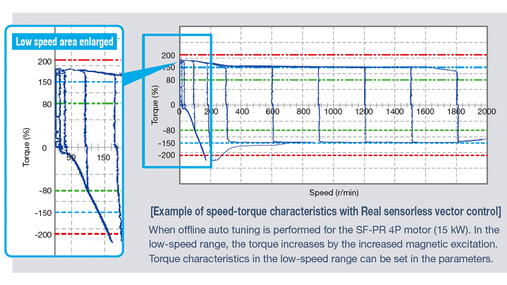

Inverters-FREQROL-A800 Plus Series -FREQROL-A800 Plus for CRANES- Pursuit of leading drive performance

Pursuit of leading drive performance
High response
The improved speed response ensures a minimal speed fluctuation to maintain a constant speed when the load fluctuates.
- Speed response
Real sensorless vector control 50 Hz*3 (A700: 20 Hz)
Vector control*4 130 Hz*5 (A700: 50 Hz)

High torque at low speed
Our new inverter realizes smooth cargo handling work at low speed and high torque for the slow and stable movements required for heavy objects.
- Starting torque (at 0.3 Hz)
Real sensorless vector control 200% (ND rating)
Vector control*4 200% (ND rating)
(150% of initial setting for 5.5K or higher)

- *3At 3.7 kW with no load Differs depending on the load conditions and motor capacity.
- *4The vector control is available when a vector control compatible option is installed.
- *5The option (FR-A8AP, FR-A8AL, or FR-A8TP) is required.